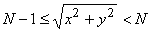

Problem 331
NN disks are placed on a square game board. Each disk has a black side and white side.
At each turn, you may choose a disk and flip all the disks in the same row and the same column as this disk: thus 2N-1 disks are flipped. The game ends when all disks show their white side. The following example shows a game on a 55 board.

It can be proven that 3 is the minimal number of turns to finish this game.
The bottom left disk on the NN board has coordinates (0,0);
the bottom right disk has coordinates (N-1,0) and the top left disk has coordinates (0,N-1).
Let CN be the following configuration of a board with NN disks:
A disk at (x,y) satisfying , shows its black side; otherwise, it shows its white side. C5 is shown above.
Let T(N) be the minimal number of turns to finish a game starting from configuration CN or 0 if configuration CN is unsolvable.
We have shown that T(5)=3. You are also given that T(10)=29 and T(1 000)=395253.
Find  .
.